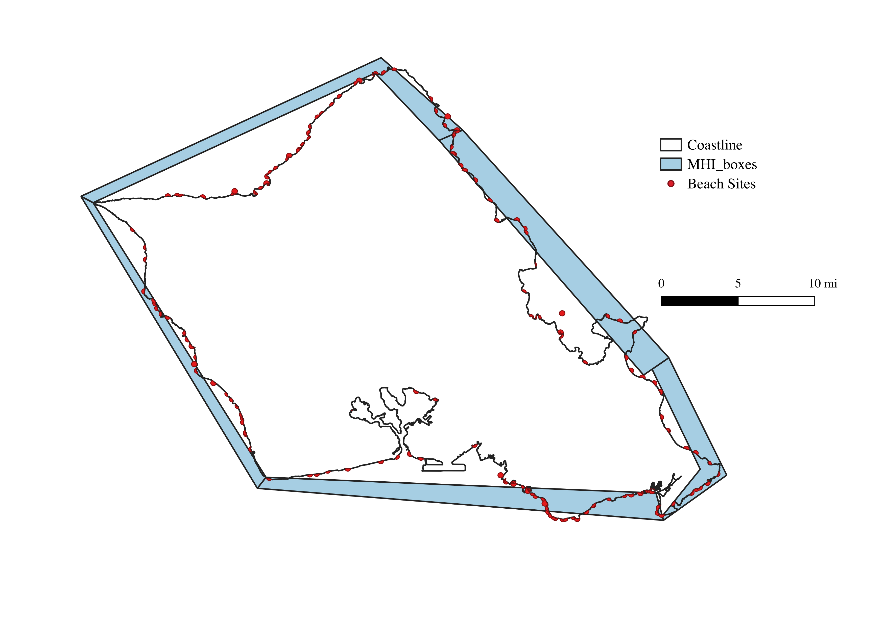

The following code estimates welfare changes associated with varying conditions of nearshore environmental quality on the island of Hawai'i. The primary impact considered is the loss of coral reef biomass, which serves as an environmental and economic asset. Welfare effects are estimated through two distinct models that capture changes in household utility and behavioral responses to environmental degradation. These models use observed visitation and population data to approximate demand, and they translate changes in reef quality into utility impacts, following standard approaches in environmental and recreational economics. The two models include:
An Economic Model using a random utility framework from Fezzi. et al 2023
Atlantic Biophysical Sub-Model which estimates changes to ecological conditions.
The graphical representation of this process is illustrated below
Running Code
This section calls the necessary R packages and sources external scripts from the original study. These scripts provide the estimated coefficients from the Random Utility Model (RUM), which will be used to simulate individual preferences and estimate welfare changes under different environmental quality scenarios. These parameters reflect the marginal utility of various site attributes, including coral reef biomass, travel cost, and environmental conditions.
Code
library(dplyr)
Attaching package: 'dplyr'
The following objects are masked from 'package:stats':
filter, lag
The following objects are masked from 'package:base':
intersect, setdiff, setequal, union
Code
library(tidyr)library(ggplot2)library(sf)
Warning: package 'sf' was built under R version 4.3.3
Linking to GEOS 3.11.0, GDAL 3.5.3, PROJ 9.1.0; sf_use_s2() is TRUE
Code
library(gganimate)### load functionssource("~/CR/codedata/dummier.R")source("~/CR/codedata/travel_cost.R")source("~/CR/codedata/gridplot.R")### load model ###load(file ="~/CR/codedata/model3.mod")### this are the travel cost model estimates ###m1
The following code calculates the travel cost from each residential grid to each recreation site across the Hawaiian Islands. It uses economic and geographic data collected from each island, including household income, travel distance, and mode assumptions.
Travel costs are estimated following the methodology of Fezzi et al. (2023), who incorporate both time and monetary expenses into a unified measure of generalized cost. These estimates serve as one of the key explanatory variables in the Random Utility Model (RUM), which is used to simulate recreation site choice.
Code
dist1 <-read.csv("~/codedata/dist1.csv")sites_join <-read.csv("~/codedata/sites_join.csv")x1 <-merge(dist1, sites_join)x1$coastal[x1$name =="Home"]=0### Prepared dataset for maps plot:out <- x1[order(x1$siteID),]out <- out[c(1,3,8:12)]m##using 85K because that was the survey amountout$incometran_track=out$medincome_tract/85000coasts <- sites[sites$coastal ==1& sites$name!="Home",]x1=merge(SSP1, x1, by.x ="polygon", by.y ="Box_ID_2", all.y =TRUE)x1 <- x1[order(x1$km2_ID,x1$siteID),] ## btw it is correct that the dim(x) is lower than dim(dist) because## I aggregated some siteslength(unique(x1$siteID))### FINISHED LOADING AND MERGING DATASETS ####rm(dist, pop, sitesjoin)### CALCULATE TRAVEL COST ####x1$cost <-0x1$duration[ x1$siteID ==351] <- x1$duration[ x1$siteID ==351] +40## this sites needs 40min walking to be reached## Need to also do this for Hawaii### Change here for different fuel costx1$cost <- x1$distance.meters*0.001* (0.20/1.5 ) ## fuel cost ## assumption on fuel cost:## 20 miles/gallon# $4.3/gallon# means $4.3 per 20 miles --> 0.215 $/mile# 10 km --> 6.2 miles --> $1.33 travel cost per km# 10km * 0.20 / 1.5 = $1.33 so the values coincide with the cost used above.x1$cost <- x1$cost + (x1$duration /60)*3/4*24.14## add the value of time (assuming a 25$ per hour average wage rate)x1$cost <- x1$cost *2## the value for a return trip#### put Molokini cost equal to the one of Makena Landing Beach Park + 100$ (cost of a snorkeling tour)x1$cost[x1$siteID ==388] <- x1$cost[x1$siteID ==359] +100
Atlantis Model
To assess environmental changes in the nearshore ecosystem, we incorporate biomass outputs from the Atlantis ecosystem model. These outputs represent projected ecological dynamics—specifically, coral reef and associated species biomass—under different management and environmental scenarios.
The biomass values will be:
Spatially aggregated by polygon to match the resolution used in the economic model.
Processed annually to calculate percentage changes in biomass relative to the baseline year.
These percentage changes provide the key environmental quality metric (e.g., reef health) that feeds into the Economic Model outlined in the previous section. Specifically, the estimated changes will modify site attributes within the Random Utility Model framework to simulate how changes in reef biomass affect recreational behavior and welfare.
Base level Coral
The base level of coral is the average biomass of 2015-2020 for each near polygon.

Yearly Percent Change
Then for each time step out to 2100 we sum up the biomass of coral reef:
\(C_{pt} = \sum V_{pt} / \sum V_{pt}=0\)
The following code does this for scenario SSP1 1-3. The file required if from the Atlantis which is to large for github so please request.
For each scenario predicted by the Atlantis ecosystem model (e.g., SSP1, SSP2, SSP3), we run a simulation loop across all time steps to estimate the welfare impacts of changing nearshore coral biomass.
Specifically, for each year in the scenario:
Biomass outputs are aggregated spatially (by polygon or site).
The percentage change in coral reef biomass relative to the baseline is calculated.
These changes are passed into the Random Utility Model, updating site attributes for each grid-cell household.
Compensating Variation (CV) is then computed to measure the change in household welfare due to environmental change.
This process is repeated for each:
Grid cell (representing origin locations of visitors)
Recreational site (destination choices)
Time step (e.g., yearly from 2025 to 2100)
Scenario (SSP1–3)
Predict SSP1
Below is a loop (conceptual or in code) that:
Iterates through each time step of the SSP1 scenario
Updates coral biomass conditions
Recalculates utilities and choice probabilities
Estimates welfare change (CV) for each grid-location pair
Code
### parametersbeta <- m3$results[,1]### Considering a transfer to Oahu:x1[is.na(x1)] <-0X0 <-cbind( x1$cost,x1$home, x1$coastal, x1$citypark, x1$trailall, x1$haleakala, x1$molokini, x1$parking, x1$showers, x1$lifeguard, x1$rock, x1$manmade, x1$beachmedium, x1$beachlarge, x1$surf, x1$swim, x1$snork, x1$res_fish_bio, x1$PNAS, x1$playground, x1$sports, x1$snork*x1$PNAS, x1$snork*x1$res_fish_bio)X0[is.na(X0)] <-0xsim <- x1final <-data.frame(matrix(ncol =2, nrow =0))all <-data.frame(matrix(ncol =2, nrow =0))#colnames(final) <- c("time10", "time20" , "time30" , "time40")#this needs to be ran as a loopfor (i in2:82) { xsim <- x1 xsim$PNAS <- xsim$PNAS *xsim[,i] xsim$PNAS[xsim$PNAS <=0] <-0 X1 <-cbind( xsim$cost,xsim$home, xsim$coastal, xsim$citypark, xsim$trailall, xsim$haleakala, xsim$molokini, xsim$parking, xsim$showers, xsim$lifeguard, xsim$rock, xsim$manmade, xsim$beachmedium, xsim$beachlarge, xsim$surf, xsim$swim, xsim$snork, xsim$res_fish_bio, xsim$PNAS, xsim$playground, xsim$sports, xsim$snork*xsim$PNAS, xsim$snork*xsim$res_fish_bio) X1[is.na(X1)] <-0### CALCULATION OF WTP FOR EACH GRID LOCATION wtpw <-quality.change(beta = beta, ### parametersX0=X0, ### X variables in the baselineX1 = X1, #### X variables in the scenariopid = x1$km2_ID, ### ID of the 1km gridcost =1) ### column of the cost parameter in the X matrix### TOTAL WTP b=merge(wtpw,out, by.x=c("id"),by.y=c("km2_ID")) b$time=i a=b %>%group_by(island) %>%summarize(SSP1_block=sum(WTP * incometran_track*grid_km_censusblock_Pop18_densityKM *365) ) a$time=i all=rbind(b,all) final=rbind(a,final)}df=finalall_df=allcolnames(all_df)[2]="SSP1"
Predict SSP2
Code
####This is for SSP2x1 <-merge(dist1, sites_join)x1$coastal[x1$name =="Home"]=0x1=merge(SSP2, x1, by.x ="polygon", by.y ="Box_ID_2", all.y =TRUE)x1 <- x1[order(x1$km2_ID,x1$siteID),] ## btw it is correct that the dim(x) is lower than dim(dist) because## I aggregated some siteslength(unique(x1$siteID))### FINISHED LOADING AND MERGING DATASETS ####rm(dist, pop, sitesjoin)### CALCULATE TRAVEL COST ####x1$cost <-0x1$duration[ x1$siteID ==351] <- x1$duration[ x1$siteID ==351] +40## this sites needs 40min walking to be reached## Need to also do this for Hawaii### Change here for different fuel costx1$cost <- x1$distance.meters*0.001* (0.20/1.5 ) ## fuel cost ## assumption on fuel cost:## 20 miles/gallon# $4.3/gallon# means $4.3 per 20 miles --> 0.215 $/mile# 10 km --> 6.2 miles --> $1.33 travel cost per km# 10km * 0.20 / 1.5 = $1.33 so the values coincide with the cost used above.x1$cost <- x1$cost + (x1$duration /60)*3/4*24.14## add the value of time (assuming a 25$ per hour average wage rate)x1$cost <- x1$cost *2## the value for a return trip#### put Molokini cost equal to the one of Makena Landing Beach Park + 100$ (cost of a snorkeling tour)x1$cost[x1$siteID ==388] <- x1$cost[x1$siteID ==359] +100### PREPARE DATA FOR PREDICTIONS ### parametersbeta <- m3$results[,1]### Considering a transfer to Oahu:x1[is.na(x1)] <-0X0 <-cbind( x1$cost,x1$home, x1$coastal, x1$citypark, x1$trailall, x1$haleakala, x1$molokini, x1$parking, x1$showers, x1$lifeguard, x1$rock, x1$manmade, x1$beachmedium, x1$beachlarge, x1$surf, x1$swim, x1$snork, x1$res_fish_bio, x1$PNAS, x1$playground, x1$sports, x1$snork*x1$PNAS, x1$snork*x1$res_fish_bio)X0[is.na(X0)] <-0xsim <- x1final <-data.frame(matrix(ncol =2, nrow =0))all <-data.frame(matrix(ncol =2, nrow =0))#colnames(final) <- c("time10", "time20" , "time30" , "time40")#this needs to be ran as a loopfor (i in2:83) { xsim <- x1 xsim$PNAS <- xsim$PNAS *xsim[,i] xsim$PNAS[xsim$PNAS <=0] <-0 X1 <-cbind( xsim$cost,xsim$home, xsim$coastal, xsim$citypark, xsim$trailall, xsim$haleakala, xsim$molokini, xsim$parking, xsim$showers, xsim$lifeguard, xsim$rock, xsim$manmade, xsim$beachmedium, xsim$beachlarge, xsim$surf, xsim$swim, xsim$snork, xsim$res_fish_bio, xsim$PNAS, xsim$playground, xsim$sports, xsim$snork*xsim$PNAS, xsim$snork*xsim$res_fish_bio) X1[is.na(X1)] <-0### CALCULATION OF WTP FOR EACH GRID LOCATION wtpw <-quality.change(beta = beta, ### parametersX0=X0, ### X variables in the baselineX1 = X1, #### X variables in the scenariopid = x1$km2_ID, ### ID of the 1km gridcost =1) ### column of the cost parameter in the X matrix### TOTAL WTP b=merge(wtpw,out, by.x=c("id"),by.y=c("km2_ID")) b$time=i a=b %>%group_by(island) %>%summarize(SSP2_block=sum(WTP * incometran_track*grid_km_censusblock_Pop18_densityKM *365) ) a$time=i all=rbind(b,all) final=rbind(a,final)}df=merge(df,final, all.x =TRUE)colnames(all)[2]="SSP2"all_df=merge(all_df, all, all.x =TRUE)
Predict SSP3
Code
####This is for SSP3x1 <-merge(dist1, sites_join)x1$coastal[x1$name =="Home"]=0x1=merge(SSP3, x1, by.x ="polygon", by.y ="Box_ID_2", all.y =TRUE)x1 <- x1[order(x1$km2_ID,x1$siteID),] ## btw it is correct that the dim(x) is lower than dim(dist) because## I aggregated some siteslength(unique(x1$siteID))### FINISHED LOADING AND MERGING DATASETS ###### CALCULATE TRAVEL COST ####x1$cost <-0x1$duration[ x1$siteID ==351] <- x1$duration[ x1$siteID ==351] +40## this sites needs 40min walking to be reached## Need to also do this for Hawaii### Change here for different fuel costx1$cost <- x1$distance.meters*0.001* (0.20/1.5 ) ## fuel cost ## assumption on fuel cost:## 20 miles/gallon# $4.3/gallon# means $4.3 per 20 miles --> 0.215 $/mile# 10 km --> 6.2 miles --> $1.33 travel cost per km# 10km * 0.20 / 1.5 = $1.33 so the values coincide with the cost used above.x1$cost <- x1$cost + (x1$duration /60)*3/4*24.14## add the value of time (assuming a 25$ per hour average wage rate)x1$cost <- x1$cost *2## the value for a return trip#### put Molokini cost equal to the one of Makena Landing Beach Park + 100$ (cost of a snorkeling tour)x1$cost[x1$siteID ==388] <- x1$cost[x1$siteID ==359] +100### PREPARE DATA FOR PREDICTIONS ### parametersbeta <- m3$results[,1]### Considering a transfer to Oahu:x1[is.na(x1)] <-0X0 <-cbind( x1$cost,x1$home, x1$coastal, x1$citypark, x1$trailall, x1$haleakala, x1$molokini, x1$parking, x1$showers, x1$lifeguard, x1$rock, x1$manmade, x1$beachmedium, x1$beachlarge, x1$surf, x1$swim, x1$snork, x1$res_fish_bio, x1$PNAS, x1$playground, x1$sports, x1$snork*x1$PNAS, x1$snork*x1$res_fish_bio)X0[is.na(X0)] <-0xsim <- x1final <-data.frame(matrix(ncol =2, nrow =0))all <-data.frame(matrix(ncol =2, nrow =0))#colnames(final) <- c("time10", "time20" , "time30" , "time40")#this needs to be ran as a loopfor (i in2:83) { xsim <- x1 xsim$PNAS <- xsim$PNAS *xsim[,i] xsim$PNAS[xsim$PNAS <=0] <-0 X1 <-cbind( xsim$cost,xsim$home, xsim$coastal, xsim$citypark, xsim$trailall, xsim$haleakala, xsim$molokini, xsim$parking, xsim$showers, xsim$lifeguard, xsim$rock, xsim$manmade, xsim$beachmedium, xsim$beachlarge, xsim$surf, xsim$swim, xsim$snork, xsim$res_fish_bio, xsim$PNAS, xsim$playground, xsim$sports, xsim$snork*xsim$PNAS, xsim$snork*xsim$res_fish_bio) X1[is.na(X1)] <-0### CALCULATION OF WTP FOR EACH GRID LOCATION wtpw <-quality.change(beta = beta, ### parametersX0=X0, ### X variables in the baselineX1 = X1, #### X variables in the scenariopid = x1$km2_ID, ### ID of the 1km gridcost =1) ### column of the cost parameter in the X matrix### TOTAL WTP b=merge(wtpw,out, by.x=c("id"),by.y=c("km2_ID")) b$time=i a=b %>%group_by(island) %>%summarize(SSP3_block=sum(WTP * incometran_track*grid_km_censusblock_Pop18_densityKM *365) ) a$time=i all=rbind(b,all) final=rbind(a,final)}df=merge(df,final, all.x =TRUE)colnames(all)[2]="SSP3"all_df=merge(all_df, all, all.x =TRUE)
Data Aggregation
Two datasets were created in the prediction modeling.
Aggregated Totals by population and income weighted by Island Each Year
This code snippet produces a projected summary table of total welfare loss by island, under each scenario (SSP1–SSP3). The results are aggregated over time and space, incorporating:
Annual compensating variation (CV) estimates at the grid level
Population projections for the state of Hawai'i under SSP1–SSP3, used to scale welfare impacts
Two discounting frameworks:
A standard constant discount rate (e.g., circular A-4 rate, typically 3%)
A pluralistic (declining or hyperbolic) discount rate, reflecting alternative time preferences in environmental valuation
These discounted totals provide a long-term estimate of the economic cost of environmental degradation (via coral biomass loss) under different future pathways. The final output summarizes welfare changes per island, scenario, and discounting method, supporting policy evaluation and prioritization.
The raw welfare estimates generated in previous steps are not yet adjusted for differences in income levels or population density. The next code snippet computes total willingness to pay (WTP) by:
Aggregating individual welfare estimates by income tract and grid cell
Weighting by local population to reflect the total affected individuals
This adjusted dataset is especially useful for understanding distributional impacts of environmental change and for producing spatially explicit visualizations of welfare loss.
In the paper we present 2030, 2050, 2100 but here we have also 2075
Code
# Define the cutpoints for 7 intervalsall_df <-read_csv("~/CR/codedata/all_grids.csv")%>%select(-starts_with("..."))all_df <- all_df %>%mutate(SSP1_WTP_bin =case_when( SSP1_TotalWTP <=-1e6~"≤ -1M", SSP1_TotalWTP <=-1e5~"-1M to -100K", SSP1_TotalWTP <=-1e3~"-100K to -1K", SSP1_TotalWTP <=-100~"-1K to -100", SSP1_TotalWTP <0~"-100 to 0", SSP1_TotalWTP ==0~"0", SSP1_TotalWTP <=100~"0 to 100", SSP1_TotalWTP <=1e3~"100 to 1K", SSP1_TotalWTP <=1e4~"1K to 10K",TRUE~"> 10K" ))all_df <- all_df %>%mutate(SSP2_WTP_bin =case_when( SSP2_TotalWTP <=-1e6~"≤ -1M", SSP2_TotalWTP <=-1e5~"-1M to -100K", SSP2_TotalWTP <=-1e3~"-100K to -1K", SSP2_TotalWTP <=-100~"-1K to -100", SSP2_TotalWTP <0~"-100 to 0", SSP2_TotalWTP ==0~"0", SSP2_TotalWTP <=100~"0 to 100", SSP2_TotalWTP <=1e3~"100 to 1K", SSP2_TotalWTP <=1e4~"1K to 10K",TRUE~"> 10K" ))all_df <- all_df %>%mutate(SSP3_WTP_bin =case_when( SSP3_TotalWTP <=-1e6~"≤ -1M", SSP3_TotalWTP <=-1e5~"-1M to -100K", SSP3_TotalWTP <=-1e3~"-100K to -1K", SSP3_TotalWTP <=-100~"-1K to -100", SSP3_TotalWTP <0~"-100 to 0", SSP3_TotalWTP ==0~"0", SSP3_TotalWTP <=100~"0 to 100", SSP3_TotalWTP <=1e3~"100 to 1K", SSP3_TotalWTP <=1e4~"1K to 10K",TRUE~"> 10K" ))color_palette <-c("≤ -1M"="darkred","-1M to -100K"="brown","-100K to -1K"="lightcoral","-1K to -100"="pink","-100 to 0"="mistyrose","0"="white","0 to 100"="greenyellow","100 to 1K"="limegreen","> 10K"="darkgreen")all_df$SSP1_WTP_bin <-factor( all_df$SSP1_WTP_bin,levels =names(color_palette))all_df$SSP2_WTP_bin <-factor( all_df$SSP2_WTP_bin,levels =names(color_palette))all_df$SSP2_WTP_bin <-factor( all_df$SSP2_WTP_bin,levels =names(color_palette))# Then plot:ggplot(all_df %>%filter(Year %in%c(2020, 2050, 2075, 2100)),aes(x = longitude, y = latitude, color = SSP1_WTP_bin)) +geom_point(size =0.5, alpha =1) +geom_sf(data = hawaii_counties,fill =NA,color ="black",size =0.4,inherit.aes =FALSE ) +coord_sf(xlim =c(-161, -154), ylim =c(18.5, 22.5)) +scale_color_manual(values = color_palette,name ="Total WTP",drop =FALSE,limits =names(color_palette) ) +facet_wrap(vars(Year), ncol =2) +theme_light()
Animation Welfare
These produce animations of changes in annual welfare to the year 2100
The code chunk runs the animation and saves the file.
The Markdown line right after brings the GIF into the rendered output.
Make sure the GIF file path is correct relative to the document, or specify the path if needed.
Legend for the following animations
Code
color_palette <-c("≤ -1M"="darkred","-1M to -100K"="brown","-100K to -1K"="lightcoral","-1K to -100"="pink","-100 to 0"="mistyrose","0"="white","0 to 100"="greenyellow","100 to 1K"="limegreen","> 10K"="darkgreen")# Create a blank plot canvasplot(NULL, xaxt ="n", yaxt ="n", bty ="n",xlab ="", ylab ="", xlim =c(0, 1), ylim =c(0, 1))# Draw the standalone legendlegend("center",legend =names(color_palette),fill =unname(color_palette),bty ="o", # border around legendcex =1.0, # text sizetitle ="Total WTP",title.cex =1.2, # title sizencol =1,xpd =TRUE)
---title: "The economic impact of climate change on coral reef in the Main Hawaiian Islands"author: "Ashley Lowe Mackenzie et. al"format: html: code-fold: true # Enables dropdown for code code-tools: true # (Optional) Adds buttons like "Show Code" code-summary: "Show code" # (Optional) Custom label for dropdown toc: true toc-location: left page-layout: fulleditor: visual---# Coral Reef HawaiiThe following code estimates welfare changes associated with varying conditions of nearshore environmental quality on the island of Hawai\'i. The primary impact considered is the loss of coral reef biomass, which serves as an environmental and economic asset. Welfare effects are estimated through two distinct models that capture changes in household utility and behavioral responses to environmental degradation. These models use observed visitation and population data to approximate demand, and they translate changes in reef quality into utility impacts, following standard approaches in environmental and recreational economics. The two models include:1. An Economic Model using a random utility framework from [Fezzi. et al 2023](https://doi.org/10.1016/j.ecolecon.2022.107628)2. Atlantic Biophysical Sub-Model which estimates changes to ecological conditions.The graphical representation of this process is illustrated below## Running CodeThis section calls the necessary R packages and sources external scripts from the original study. These scripts provide the estimated coefficients from the Random Utility Model (RUM), which will be used to simulate individual preferences and estimate welfare changes under different environmental quality scenarios. These parameters reflect the marginal utility of various site attributes, including coral reef biomass, travel cost, and environmental conditions.```{r}library(dplyr)library(tidyr)library(ggplot2)library(sf)library(gganimate)### load functionssource("~/CR/codedata/dummier.R")source("~/CR/codedata/travel_cost.R")source("~/CR/codedata/gridplot.R")### load model ###load(file ="~/CR/codedata/model3.mod")### this are the travel cost model estimates ###m1```## Travel CostThe following code calculates the **travel cost** from each residential grid to each recreation site across the Hawaiian Islands. It uses economic and geographic data collected from each island, including household income, travel distance, and mode assumptions.Travel costs are estimated following the methodology of **Fezzi et al. (2023)**, who incorporate both time and monetary expenses into a unified measure of generalized cost. These estimates serve as one of the key explanatory variables in the Random Utility Model (RUM), which is used to simulate recreation site choice.```{r eval=FALSE}dist1 <-read.csv("~/codedata/dist1.csv")sites_join <-read.csv("~/codedata/sites_join.csv")x1 <-merge(dist1, sites_join)x1$coastal[x1$name =="Home"]=0### Prepared dataset for maps plot:out <- x1[order(x1$siteID),]out <- out[c(1,3,8:12)]m##using 85K because that was the survey amountout$incometran_track=out$medincome_tract/85000coasts <- sites[sites$coastal ==1& sites$name!="Home",]x1=merge(SSP1, x1, by.x ="polygon", by.y ="Box_ID_2", all.y =TRUE)x1 <- x1[order(x1$km2_ID,x1$siteID),] ## btw it is correct that the dim(x) is lower than dim(dist) because## I aggregated some siteslength(unique(x1$siteID))### FINISHED LOADING AND MERGING DATASETS ####rm(dist, pop, sitesjoin)### CALCULATE TRAVEL COST ####x1$cost <-0x1$duration[ x1$siteID ==351] <- x1$duration[ x1$siteID ==351] +40## this sites needs 40min walking to be reached## Need to also do this for Hawaii### Change here for different fuel costx1$cost <- x1$distance.meters*0.001* (0.20/1.5 ) ## fuel cost ## assumption on fuel cost:## 20 miles/gallon# $4.3/gallon# means $4.3 per 20 miles --> 0.215 $/mile# 10 km --> 6.2 miles --> $1.33 travel cost per km# 10km * 0.20 / 1.5 = $1.33 so the values coincide with the cost used above.x1$cost <- x1$cost + (x1$duration /60)*3/4*24.14## add the value of time (assuming a 25$ per hour average wage rate)x1$cost <- x1$cost *2## the value for a return trip#### put Molokini cost equal to the one of Makena Landing Beach Park + 100$ (cost of a snorkeling tour)x1$cost[x1$siteID ==388] <- x1$cost[x1$siteID ==359] +100```## Atlantis ModelTo assess environmental changes in the nearshore ecosystem, we incorporate biomass outputs from the Atlantis ecosystem model. These outputs represent projected ecological dynamics---specifically, coral reef and associated species biomass---under different management and environmental scenarios.The biomass values will be:- Spatially aggregated by polygon to match the resolution used in the economic model.- Processed annually to calculate percentage changes in biomass relative to the baseline year.These percentage changes provide the key environmental quality metric (e.g., reef health) that feeds into the Economic Model outlined in the previous section. Specifically, the estimated changes will modify site attributes within the Random Utility Model framework to simulate how changes in reef biomass affect recreational behavior and welfare.### Base level CoralThe base level of coral is the average biomass of 2015-2020 for each near polygon.### Yearly Percent ChangeThen for each time step out to 2100 we sum up the biomass of coral reef:$C_{pt} = \sum V_{pt} / \sum V_{pt}=0$The following code does this for scenario SSP1 1-3. The file required if from the Atlantis which is to large for github so please request.```{r eval=FALSE}library(dplyr)library(tidyr)###This grabs Atlantis and gets it into the write stepsSSP3_loPPkF <-readRDS("~/codedata/SSP3_control_last.rds")biomass_spatial_stanza=SSP3_loPPkF$biomass_spatial_stanzassp3_coral=subset(biomass_spatial_stanza,species=="Pocillopora"|species=="Porites branching"|species=="Porites massive"|species=="Montipora"|species=="Leptoseris")ssp3_coral$time=round(ssp3_coral$time, digits =0)ssp3_coral=ssp3_coral %>%distinct(time, polygon, species, .keep_all =TRUE)ssp3_coral=ssp3_coral %>%group_by(polygon, time) %>%summarize(Coral_NearShore=sum(atoutput))ssp3_coral=ssp3_coral[ssp3_coral$polygon %in% keep, ]ssp3_coral=ssp3_coral %>%filter(!(time %%1))ssp3_coral[order(ssp3_coral$time),]ssp3_coral=ssp3_coral %>%filter(!(time <=9))t=ssp3_coral %>%filter(time<=14)%>%group_by(polygon) %>%summarise(mean=mean(Coral_NearShore))ssp3_coral=ssp3_coral %>%filter(!(time <=13))ssp3_coral=merge(t,ssp3_coral)percentchangeSSP3=ssp3_coral %>%group_by(polygon) %>%mutate(Coral_perchange = Coral_NearShore/mean)percentchangeSSP3=percentchangeSSP3[c(1,3,5)]percentchangeSSP3$time<-sub("^", "time", percentchangeSSP3$time )SSP3=spread(percentchangeSSP3, time, Coral_perchange)SSP1_loPPkF <-readRDS("~/codedata/SSP1_control_last.rds")biomass_spatial_stanza=SSP1_loPPkF$biomass_spatial_stanzassp1_coral=subset(biomass_spatial_stanza,species=="Pocillopora"|species=="Porites branching"|species=="Porites massive"|species=="Montipora"|species=="Leptoseris")ssp1_coral=ssp1_coral %>%group_by(polygon, time) %>%summarize(Coral_NearShore=sum(atoutput))ssp1_coral=ssp1_coral[ssp1_coral$polygon %in% keep, ]ssp1_coral=ssp1_coral %>%filter(!(time %%1))ssp1_coral[order(ssp1_coral$time),]ssp1_coral=ssp1_coral %>%filter(!(time <=9))t=ssp1_coral %>%filter(time<=14)%>%group_by(polygon) %>%summarise(mean=mean(Coral_NearShore))ssp1_coral=ssp1_coral %>%filter(!(time <=13))ssp1_coral=merge(t,ssp1_coral)percentchangeSSP1=ssp1_coral %>%group_by(polygon) %>%mutate(Coral_perchange = Coral_NearShore/mean)percentchangeSSP1=percentchangeSSP1[c(1,3,5)]percentchangeSSP1$time<-sub("^", "time", percentchangeSSP1$time )SSP1=spread(percentchangeSSP1, time, Coral_perchange)SSP2_loPPkF <-readRDS("~/codedata/SSP2_control_last.rds")biomass_spatial_stanza=SSP2_loPPkF$biomass_spatial_stanzassp2_coral=subset(biomass_spatial_stanza,species=="Pocillopora"|species=="Porites branching"|species=="Porites massive"|species=="Montipora"|species=="Leptoseris"| species=="crustose coralline algae")ssp2_coral=ssp2_coral %>%group_by(polygon, time) %>%summarize(Coral_NearShore=sum(atoutput))ssp2_coral=ssp2_coral[ssp2_coral$polygon %in% keep, ]ssp2_coral=ssp2_coral %>%filter(!(time %%1))ssp2_coral[order(ssp2_coral$time),]ssp2_coral=ssp2_coral %>%filter(!(time <=9))t=ssp2_coral %>%filter(time<=14)%>%group_by(polygon) %>%summarise(mean=mean(Coral_NearShore))ssp2_coral=ssp2_coral %>%filter(!(time <=13))ssp2_coral=merge(t,ssp2_coral)percentchangeSSP2=ssp2_coral %>%group_by(polygon) %>%mutate(Coral_perchange = Coral_NearShore/mean)percentchangeSSP2=percentchangeSSP2[c(1,3,5)]percentchangeSSP2$time<-sub("^", "time", percentchangeSSP2$time )SSP2=spread(percentchangeSSP2, time, Coral_perchange)```## Prediction ModelFor each scenario predicted by the Atlantis ecosystem model (e.g., SSP1, SSP2, SSP3), we run a simulation loop across all time steps to estimate the welfare impacts of changing nearshore coral biomass.Specifically, for each year in the scenario:- Biomass outputs are aggregated spatially (by polygon or site).- The percentage change in coral reef biomass relative to the baseline is calculated.- These changes are passed into the Random Utility Model, updating site attributes for each grid-cell household.- Compensating Variation (CV) is then computed to measure the change in household welfare due to environmental change.This process is repeated for each:- Grid cell (representing origin locations of visitors)- Recreational site (destination choices)- Time step (e.g., yearly from 2025 to 2100)- Scenario (SSP1--3)### Predict SSP1Below is a loop (conceptual or in code) that:- Iterates through each time step of the SSP1 scenario- Updates coral biomass conditions- Recalculates utilities and choice probabilities- Estimates welfare change (CV) for each grid-location pair```{r eval=FALSE}### parametersbeta <- m3$results[,1]### Considering a transfer to Oahu:x1[is.na(x1)] <-0X0 <-cbind( x1$cost,x1$home, x1$coastal, x1$citypark, x1$trailall, x1$haleakala, x1$molokini, x1$parking, x1$showers, x1$lifeguard, x1$rock, x1$manmade, x1$beachmedium, x1$beachlarge, x1$surf, x1$swim, x1$snork, x1$res_fish_bio, x1$PNAS, x1$playground, x1$sports, x1$snork*x1$PNAS, x1$snork*x1$res_fish_bio)X0[is.na(X0)] <-0xsim <- x1final <-data.frame(matrix(ncol =2, nrow =0))all <-data.frame(matrix(ncol =2, nrow =0))#colnames(final) <- c("time10", "time20" , "time30" , "time40")#this needs to be ran as a loopfor (i in2:82) { xsim <- x1 xsim$PNAS <- xsim$PNAS *xsim[,i] xsim$PNAS[xsim$PNAS <=0] <-0 X1 <-cbind( xsim$cost,xsim$home, xsim$coastal, xsim$citypark, xsim$trailall, xsim$haleakala, xsim$molokini, xsim$parking, xsim$showers, xsim$lifeguard, xsim$rock, xsim$manmade, xsim$beachmedium, xsim$beachlarge, xsim$surf, xsim$swim, xsim$snork, xsim$res_fish_bio, xsim$PNAS, xsim$playground, xsim$sports, xsim$snork*xsim$PNAS, xsim$snork*xsim$res_fish_bio) X1[is.na(X1)] <-0### CALCULATION OF WTP FOR EACH GRID LOCATION wtpw <-quality.change(beta = beta, ### parametersX0=X0, ### X variables in the baselineX1 = X1, #### X variables in the scenariopid = x1$km2_ID, ### ID of the 1km gridcost =1) ### column of the cost parameter in the X matrix### TOTAL WTP b=merge(wtpw,out, by.x=c("id"),by.y=c("km2_ID")) b$time=i a=b %>%group_by(island) %>%summarize(SSP1_block=sum(WTP * incometran_track*grid_km_censusblock_Pop18_densityKM *365) ) a$time=i all=rbind(b,all) final=rbind(a,final)}df=finalall_df=allcolnames(all_df)[2]="SSP1"```### Predict SSP2```{r eval=FALSE}####This is for SSP2x1 <-merge(dist1, sites_join)x1$coastal[x1$name =="Home"]=0x1=merge(SSP2, x1, by.x ="polygon", by.y ="Box_ID_2", all.y =TRUE)x1 <- x1[order(x1$km2_ID,x1$siteID),] ## btw it is correct that the dim(x) is lower than dim(dist) because## I aggregated some siteslength(unique(x1$siteID))### FINISHED LOADING AND MERGING DATASETS ####rm(dist, pop, sitesjoin)### CALCULATE TRAVEL COST ####x1$cost <-0x1$duration[ x1$siteID ==351] <- x1$duration[ x1$siteID ==351] +40## this sites needs 40min walking to be reached## Need to also do this for Hawaii### Change here for different fuel costx1$cost <- x1$distance.meters*0.001* (0.20/1.5 ) ## fuel cost ## assumption on fuel cost:## 20 miles/gallon# $4.3/gallon# means $4.3 per 20 miles --> 0.215 $/mile# 10 km --> 6.2 miles --> $1.33 travel cost per km# 10km * 0.20 / 1.5 = $1.33 so the values coincide with the cost used above.x1$cost <- x1$cost + (x1$duration /60)*3/4*24.14## add the value of time (assuming a 25$ per hour average wage rate)x1$cost <- x1$cost *2## the value for a return trip#### put Molokini cost equal to the one of Makena Landing Beach Park + 100$ (cost of a snorkeling tour)x1$cost[x1$siteID ==388] <- x1$cost[x1$siteID ==359] +100### PREPARE DATA FOR PREDICTIONS ### parametersbeta <- m3$results[,1]### Considering a transfer to Oahu:x1[is.na(x1)] <-0X0 <-cbind( x1$cost,x1$home, x1$coastal, x1$citypark, x1$trailall, x1$haleakala, x1$molokini, x1$parking, x1$showers, x1$lifeguard, x1$rock, x1$manmade, x1$beachmedium, x1$beachlarge, x1$surf, x1$swim, x1$snork, x1$res_fish_bio, x1$PNAS, x1$playground, x1$sports, x1$snork*x1$PNAS, x1$snork*x1$res_fish_bio)X0[is.na(X0)] <-0xsim <- x1final <-data.frame(matrix(ncol =2, nrow =0))all <-data.frame(matrix(ncol =2, nrow =0))#colnames(final) <- c("time10", "time20" , "time30" , "time40")#this needs to be ran as a loopfor (i in2:83) { xsim <- x1 xsim$PNAS <- xsim$PNAS *xsim[,i] xsim$PNAS[xsim$PNAS <=0] <-0 X1 <-cbind( xsim$cost,xsim$home, xsim$coastal, xsim$citypark, xsim$trailall, xsim$haleakala, xsim$molokini, xsim$parking, xsim$showers, xsim$lifeguard, xsim$rock, xsim$manmade, xsim$beachmedium, xsim$beachlarge, xsim$surf, xsim$swim, xsim$snork, xsim$res_fish_bio, xsim$PNAS, xsim$playground, xsim$sports, xsim$snork*xsim$PNAS, xsim$snork*xsim$res_fish_bio) X1[is.na(X1)] <-0### CALCULATION OF WTP FOR EACH GRID LOCATION wtpw <-quality.change(beta = beta, ### parametersX0=X0, ### X variables in the baselineX1 = X1, #### X variables in the scenariopid = x1$km2_ID, ### ID of the 1km gridcost =1) ### column of the cost parameter in the X matrix### TOTAL WTP b=merge(wtpw,out, by.x=c("id"),by.y=c("km2_ID")) b$time=i a=b %>%group_by(island) %>%summarize(SSP2_block=sum(WTP * incometran_track*grid_km_censusblock_Pop18_densityKM *365) ) a$time=i all=rbind(b,all) final=rbind(a,final)}df=merge(df,final, all.x =TRUE)colnames(all)[2]="SSP2"all_df=merge(all_df, all, all.x =TRUE)```### Predict SSP3```{r eval=FALSE}####This is for SSP3x1 <-merge(dist1, sites_join)x1$coastal[x1$name =="Home"]=0x1=merge(SSP3, x1, by.x ="polygon", by.y ="Box_ID_2", all.y =TRUE)x1 <- x1[order(x1$km2_ID,x1$siteID),] ## btw it is correct that the dim(x) is lower than dim(dist) because## I aggregated some siteslength(unique(x1$siteID))### FINISHED LOADING AND MERGING DATASETS ###### CALCULATE TRAVEL COST ####x1$cost <-0x1$duration[ x1$siteID ==351] <- x1$duration[ x1$siteID ==351] +40## this sites needs 40min walking to be reached## Need to also do this for Hawaii### Change here for different fuel costx1$cost <- x1$distance.meters*0.001* (0.20/1.5 ) ## fuel cost ## assumption on fuel cost:## 20 miles/gallon# $4.3/gallon# means $4.3 per 20 miles --> 0.215 $/mile# 10 km --> 6.2 miles --> $1.33 travel cost per km# 10km * 0.20 / 1.5 = $1.33 so the values coincide with the cost used above.x1$cost <- x1$cost + (x1$duration /60)*3/4*24.14## add the value of time (assuming a 25$ per hour average wage rate)x1$cost <- x1$cost *2## the value for a return trip#### put Molokini cost equal to the one of Makena Landing Beach Park + 100$ (cost of a snorkeling tour)x1$cost[x1$siteID ==388] <- x1$cost[x1$siteID ==359] +100### PREPARE DATA FOR PREDICTIONS ### parametersbeta <- m3$results[,1]### Considering a transfer to Oahu:x1[is.na(x1)] <-0X0 <-cbind( x1$cost,x1$home, x1$coastal, x1$citypark, x1$trailall, x1$haleakala, x1$molokini, x1$parking, x1$showers, x1$lifeguard, x1$rock, x1$manmade, x1$beachmedium, x1$beachlarge, x1$surf, x1$swim, x1$snork, x1$res_fish_bio, x1$PNAS, x1$playground, x1$sports, x1$snork*x1$PNAS, x1$snork*x1$res_fish_bio)X0[is.na(X0)] <-0xsim <- x1final <-data.frame(matrix(ncol =2, nrow =0))all <-data.frame(matrix(ncol =2, nrow =0))#colnames(final) <- c("time10", "time20" , "time30" , "time40")#this needs to be ran as a loopfor (i in2:83) { xsim <- x1 xsim$PNAS <- xsim$PNAS *xsim[,i] xsim$PNAS[xsim$PNAS <=0] <-0 X1 <-cbind( xsim$cost,xsim$home, xsim$coastal, xsim$citypark, xsim$trailall, xsim$haleakala, xsim$molokini, xsim$parking, xsim$showers, xsim$lifeguard, xsim$rock, xsim$manmade, xsim$beachmedium, xsim$beachlarge, xsim$surf, xsim$swim, xsim$snork, xsim$res_fish_bio, xsim$PNAS, xsim$playground, xsim$sports, xsim$snork*xsim$PNAS, xsim$snork*xsim$res_fish_bio) X1[is.na(X1)] <-0### CALCULATION OF WTP FOR EACH GRID LOCATION wtpw <-quality.change(beta = beta, ### parametersX0=X0, ### X variables in the baselineX1 = X1, #### X variables in the scenariopid = x1$km2_ID, ### ID of the 1km gridcost =1) ### column of the cost parameter in the X matrix### TOTAL WTP b=merge(wtpw,out, by.x=c("id"),by.y=c("km2_ID")) b$time=i a=b %>%group_by(island) %>%summarize(SSP3_block=sum(WTP * incometran_track*grid_km_censusblock_Pop18_densityKM *365) ) a$time=i all=rbind(b,all) final=rbind(a,final)}df=merge(df,final, all.x =TRUE)colnames(all)[2]="SSP3"all_df=merge(all_df, all, all.x =TRUE)```## Data AggregationTwo datasets were created in the prediction modeling.1. Aggregated Totals by population and income weighted by Island Each Year2. Raw Welfare Predictions per KM Grid```{r eval=FALSE}all_df$SSP1_TotalWTP=(all_df$SSP1*all_df$incometran_track*all_df$grid_km_censusblock_Pop18_densityKM *365) all_df$SSP2_TotalWTP=(all_df$SSP2*all_df$incometran_track*all_df$grid_km_censusblock_Pop18_densityKM *365) all_df$SSP3_TotalWTP=(all_df$SSP3*all_df$incometran_track*all_df$grid_km_censusblock_Pop18_densityKM *365) wtpssp1_total=all_df %>%filter(Year==2030| Year==2050| Year==2100)df_long <- wtpssp1_total %>%pivot_longer(cols =starts_with("SSP"),names_to ="SSP_Var",values_to ="Value")# Step 2: Create wide column names with Year infodf_long <- df_long %>%mutate(column_name =paste0("year_", Year, "_", SSP_Var))# Step 3: Pivot wider using those column namesdf_wide <- df_long %>%select(id, column_name, Value) %>%pivot_wider(names_from = column_name, values_from = Value)write.csv(df_wide, file="allssps_islands.csv")coral=SSP1[c(1,12,32,82)]colnames(coral)[2]="SSP1_2030"colnames(coral)[3]="SSP1_2050"colnames(coral)[4]="SSP1_2100"coral1=SSP2[c(1,12,32,82)]colnames(coral1)[2]="SSP2_2030"colnames(coral1)[3]="SSP2_2050"colnames(coral1)[4]="SSP2_2100"coral=merge(coral,coral1)coral1=SSP3[c(1,12,32,82)]colnames(coral1)[2]="SSP3_2030"colnames(coral1)[3]="SSP3_2050"colnames(coral1)[4]="SSP3_2100"coral=merge(coral,coral1)write.csv(coral, file="coral_new.csv")df1=gather(df, condition, wtp, SSP1_block:SSP3_block, factor_key=TRUE)df1$condition=gsub("_block", "", df1$condition)df1$island=gsub("Kauai", "Kauaʻi", df1$island)df1$island=gsub("Molokai", "Molokaʻi", df1$island)df1$island=gsub("Oahu", "Oʻahu", df1$island)df1$island=gsub("Hawaii", "Hawaiʻi", df1$island)df1$island=gsub("Lanai", "Lānaʻi", df1$island)write.csv(df1, file="allssps_islands.csv")```### Across Island aggregation### Across-Island Aggregation of Welfare LossThis code snippet produces a projected summary table of total welfare loss by island, under each scenario (SSP1--SSP3). The results are aggregated over time and space, incorporating:- Annual compensating variation (CV) estimates at the grid level- Population projections for the state of Hawai\'i under SSP1--SSP3, used to scale welfare impacts Two discounting frameworks:- A standard constant discount rate (e.g., circular A-4 rate, typically 3%)- A pluralistic (declining or hyperbolic) discount rate, reflecting alternative time preferences in environmental valuationThese discounted totals provide a long-term estimate of the economic cost of environmental degradation (via coral biomass loss) under different future pathways. The final output summarizes welfare changes per island, scenario, and discounting method, supporting policy evaluation and prioritization.```{r eval=FALSE}library(readxl)allssps_islands <-read_csv("~/CR/codedata/allssps_islands.csv") %>%select(-starts_with("..."))allssps_islandspop <-read_excel("allssps_islands.xlsx",sheet ="pop")allssps_islandspop=gather(allssps_islandspop, condition, pop, SSP1:SSP3, factor_key=TRUE)allssps_islands=merge(allssps_islands,allssps_islandspop)allssps_islands$NPV=0allssps_islands$NPV[which(allssps_islands$Year>2020)]=.02allssps_islands$NPV[which(allssps_islands$Year>2079)]=.019allssps_islands$NPV[which(allssps_islands$Year>2094)]=.018allssps_islands$time_step <- allssps_islands$Year -2020allssps_islands$NPV_WTP=allssps_islands$wtp/(1+allssps_islands$NPV)^allssps_islands$time_stepallssps_islands$NPV_WTP_Pop=(allssps_islands$wtp*allssps_islands$pop)/(1+allssps_islands$NPV)^allssps_islands$time_stepallssps_islands$NPV_WTP_pluristic=(allssps_islands$wtp*allssps_islands$pop*.4)/(1+0)^allssps_islands$time_step+(allssps_islands$wtp*allssps_islands$pop*.1)/(1)^allssps_islands$time_step+(allssps_islands$wtp*allssps_islands$pop*.3)/(1+.03)^allssps_islands$time_step+(allssps_islands$wtp*allssps_islands$pop*.2)/(1+.1)^allssps_islands$time_stepallssps_islands$NPV_WTP_pluristic2=(allssps_islands$wtp*allssps_islands$pop*.4)/(1+-.01)^allssps_islands$time_step+(allssps_islands$wtp*allssps_islands$pop*.1)/(1)^allssps_islands$time_step+(allssps_islands$wtp*allssps_islands$pop*.3)/(1+.01)^allssps_islands$time_step+(allssps_islands$wtp*allssps_islands$pop*.2)/(1+.5)^allssps_islands$time_stepallssps_islands$NPV_WTP_Lane=(allssps_islands$wtp*allssps_islands$pop)/(1+.03)^allssps_islands$time_stepallssps_islands$NPV_WTP_pluristic2=allssps_islands$NPV_WTP_pluristic2/1000allssps_islands$NPV_WTP_Lane=allssps_islands$NPV_WTP_Lane/1000allssps_islands$NPV_WTP_pluristic=allssps_islands$NPV_WTP_pluristic/1000allssps_islands$NPV_WTP=allssps_islands$NPV_WTP/1000allssps_islands$NPV_WTP_Pop=allssps_islands$NPV_WTP_Pop/1000colnames(allssps_islands)[3]="SSP Scenario"ggplot(allssps_islands, aes(x = Year)) +geom_line(aes(y = NPV_WTP_Pop, color =`SSP Scenario`, group =`SSP Scenario`)) +geom_line(aes(y = NPV_WTP_pluristic, color =`SSP Scenario`, group =`SSP Scenario`)) +geom_ribbon(aes(ymin = NPV_WTP_pluristic, ymax = NPV_WTP_Pop, fill =`SSP Scenario`, group =`SSP Scenario`),alpha =0.3, linetype =0 ) +scale_color_manual(values = group.colors) +scale_fill_manual(values = group.colors) +theme_minimal() +theme(text =element_text(family ="Times New Roman"),plot.title =element_text(hjust =0.5),legend.position ="bottom",legend.background =element_rect(fill ="white") ) +xlab("Year") +ylab("Thousands Dollars") +ggtitle("Projected Annual Welfare Impacts (in Thousands Dollars)") +facet_wrap(~factor(island, levels =c("Lānaʻi", "Molokaʻi", "Kauaʻi", "Hawaiʻi", "Maui", "Oʻahu")),ncol =2, scales ="free")```### Snap Shot within IslandThe raw welfare estimates generated in previous steps are not yet adjusted for differences in income levels or population density. The next code snippet computes total willingness to pay (WTP) by:- Aggregating individual welfare estimates by income tract and grid cell- Weighting by local population to reflect the total affected individualsThis adjusted dataset is especially useful for understanding distributional impacts of environmental change and for producing spatially explicit visualizations of welfare loss.**In the paper we present 2030, 2050, 2100 but here we have also 2075**```{r eval=FALSE}#| eval: false# Define the cutpoints for 7 intervalsall_df <-read_csv("~/CR/codedata/all_grids.csv")%>%select(-starts_with("..."))all_df <- all_df %>%mutate(SSP1_WTP_bin =case_when( SSP1_TotalWTP <=-1e6~"≤ -1M", SSP1_TotalWTP <=-1e5~"-1M to -100K", SSP1_TotalWTP <=-1e3~"-100K to -1K", SSP1_TotalWTP <=-100~"-1K to -100", SSP1_TotalWTP <0~"-100 to 0", SSP1_TotalWTP ==0~"0", SSP1_TotalWTP <=100~"0 to 100", SSP1_TotalWTP <=1e3~"100 to 1K", SSP1_TotalWTP <=1e4~"1K to 10K",TRUE~"> 10K" ))all_df <- all_df %>%mutate(SSP2_WTP_bin =case_when( SSP2_TotalWTP <=-1e6~"≤ -1M", SSP2_TotalWTP <=-1e5~"-1M to -100K", SSP2_TotalWTP <=-1e3~"-100K to -1K", SSP2_TotalWTP <=-100~"-1K to -100", SSP2_TotalWTP <0~"-100 to 0", SSP2_TotalWTP ==0~"0", SSP2_TotalWTP <=100~"0 to 100", SSP2_TotalWTP <=1e3~"100 to 1K", SSP2_TotalWTP <=1e4~"1K to 10K",TRUE~"> 10K" ))all_df <- all_df %>%mutate(SSP3_WTP_bin =case_when( SSP3_TotalWTP <=-1e6~"≤ -1M", SSP3_TotalWTP <=-1e5~"-1M to -100K", SSP3_TotalWTP <=-1e3~"-100K to -1K", SSP3_TotalWTP <=-100~"-1K to -100", SSP3_TotalWTP <0~"-100 to 0", SSP3_TotalWTP ==0~"0", SSP3_TotalWTP <=100~"0 to 100", SSP3_TotalWTP <=1e3~"100 to 1K", SSP3_TotalWTP <=1e4~"1K to 10K",TRUE~"> 10K" ))color_palette <-c("≤ -1M"="darkred","-1M to -100K"="brown","-100K to -1K"="lightcoral","-1K to -100"="pink","-100 to 0"="mistyrose","0"="white","0 to 100"="greenyellow","100 to 1K"="limegreen","> 10K"="darkgreen")all_df$SSP1_WTP_bin <-factor( all_df$SSP1_WTP_bin,levels =names(color_palette))all_df$SSP2_WTP_bin <-factor( all_df$SSP2_WTP_bin,levels =names(color_palette))all_df$SSP2_WTP_bin <-factor( all_df$SSP2_WTP_bin,levels =names(color_palette))# Then plot:ggplot(all_df %>%filter(Year %in%c(2020, 2050, 2075, 2100)),aes(x = longitude, y = latitude, color = SSP1_WTP_bin)) +geom_point(size =0.5, alpha =1) +geom_sf(data = hawaii_counties,fill =NA,color ="black",size =0.4,inherit.aes =FALSE ) +coord_sf(xlim =c(-161, -154), ylim =c(18.5, 22.5)) +scale_color_manual(values = color_palette,name ="Total WTP",drop =FALSE,limits =names(color_palette) ) +facet_wrap(vars(Year), ncol =2) +theme_light()```## Animation WelfareThese produce animations of changes in annual welfare to the year 2100- The code chunk runs the animation and saves the file.- The Markdown line right after brings the GIF into the rendered output.- Make sure the GIF file path is correct relative to the document, or specify the path if needed.Legend for the following animations```{r}color_palette <-c("≤ -1M"="darkred","-1M to -100K"="brown","-100K to -1K"="lightcoral","-1K to -100"="pink","-100 to 0"="mistyrose","0"="white","0 to 100"="greenyellow","100 to 1K"="limegreen","> 10K"="darkgreen")# Create a blank plot canvasplot(NULL, xaxt ="n", yaxt ="n", bty ="n",xlab ="", ylab ="", xlim =c(0, 1), ylim =c(0, 1))# Draw the standalone legendlegend("center",legend =names(color_palette),fill =unname(color_palette),bty ="o", # border around legendcex =1.0, # text sizetitle ="Total WTP",title.cex =1.2, # title sizencol =1,xpd =TRUE)```### SSP1 2030\>\>\>\>2100```{r eval=FALSE}#| eval: falsebase_map <-ggplot(all_df %>%filter(Year >=2020& Year <=2100)) +geom_point(aes(x = longitude, y = latitude, color = SSP1_WTP_bin),size =0.5, alpha =1) +geom_sf(data = hawaii_counties, fill =NA, color ="black", size =0.5) +coord_sf(xlim =c(-161, -154), ylim =c(18.5, 22.5)) +scale_color_manual(values = color_palette,name ="Total WTP",drop =FALSE,limits =names(color_palette) ) +theme_light(base_size =14) +labs(title ='SSP1 Year: {closest_state}')anim <- base_map +transition_states(Year, transition_length =1, state_length =1) +ease_aes('cubic-in-out') +shadow_wake(alpha =0.3, wake_length =0.2)animate(anim, nframes =81, fps =10, width =800, height =600, renderer =gifski_renderer())anim_save("hawaii_wtpssp1_animation.gif", animation =last_animation())```### SSP22030\>\>\>\>2100```{r eval=FALSE}#| eval: falsebase_map <-ggplot(all_df %>%filter(Year >=2020& Year <=2100)) +geom_point(aes(x = longitude, y = latitude, color = SSP2_WTP_bin),size =0.5, alpha =1) +geom_sf(data = hawaii_counties, fill =NA, color ="black", size =0.5) +coord_sf(xlim =c(-161, -154), ylim =c(18.5, 22.5)) +scale_color_manual(values = color_palette,name ="Total WTP",drop =FALSE,limits =names(color_palette) ) +theme_light(base_size =14) +labs(title ='SSP2 Year: {closest_state}')anim <- base_map +transition_states(Year, transition_length =1, state_length =1) +ease_aes('cubic-in-out') +shadow_wake(alpha =0.3, wake_length =0.2)animate(anim, nframes =81, fps =10, width =800, height =600, renderer =gifski_renderer())anim_save("hawaii_wtpssp2_animation.gif", animation =last_animation())```### SSP32030\>\>\>\>2100```{r eval=FALSE}#| eval: falsebase_map <-ggplot(all_df %>%filter(Year >=2020& Year <=2100)) +geom_point(aes(x = longitude, y = latitude, color = SSP3_WTP_bin),size =0.5, alpha =1) +geom_sf(data = hawaii_counties, fill =NA, color ="black", size =0.5) +coord_sf(xlim =c(-161, -154), ylim =c(18.5, 22.5)) +scale_color_manual(values = color_palette,name ="Total WTP",drop =FALSE,limits =names(color_palette) ) +theme_light(base_size =14) +labs(title ='SSP3 Year: {closest_state}')anim <- base_map +transition_states(Year, transition_length =1, state_length =1) +ease_aes('cubic-in-out') +shadow_wake(alpha =0.3, wake_length =0.2)animate(anim, nframes =81, fps =10, width =800, height =600, renderer =gifski_renderer())anim_save("hawaii_wtpssp3_animation.gif", animation =last_animation())```###